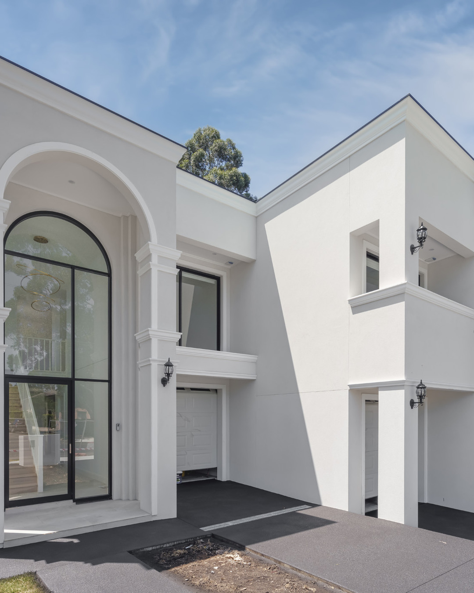
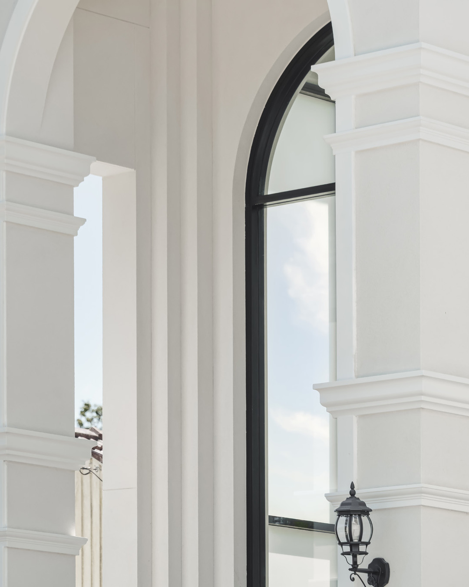

Rydalmere
Establishing view followed by the arch detail.
Final caption
Rydalmere, NSW A renewed street presence, resolved through render, decorative finishes and a full repaint. The broad result is built from smaller decisions: clean returns, a consistent surface and curved openings that hold their line from every angle. Full project on our website. Link in bio.